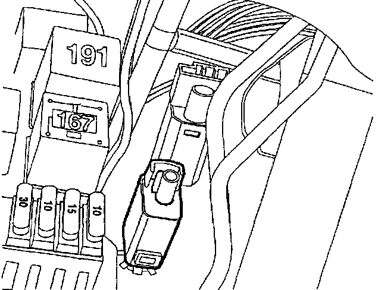

Operation CHARM
: Car repair manuals for everyone.
Home
>>
Volkswagen
>>
1997
>>
GTI (1H1) V6-2.8L (AAA)
>>
Repair and Diagnosis
>>
Sensors and Switches
>>
Sensors and Switches - Cruise Control
>>
Clutch Switch
>>
Locations
>>
Clutch Vacuum Vent Valve Switch
Clutch Vacuum Vent Valve Switch
F36, F59, F47, F114:
Component Location View
F36:

Component View
F36 Clutch Vacuum Vent Valve Switch (cruise Control)
^
On clutch pedal bracket
^
Below CPP switch F194